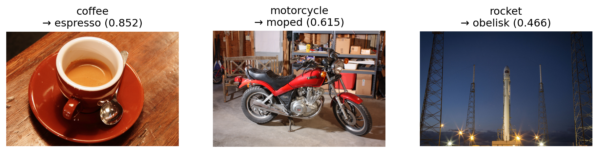

# ▶ 준비 셀 — 그대로 실행하세요.
import torch
device = torch.device('cuda' if torch.cuda.is_available() else 'cpu')
torch.manual_seed(42)
print(device)cuda
⏱ 75분 · 7주차 실습
실습 6에서는 CIFAR-10 사진 4만 장으로 CNN을 처음부터 학습시켰습니다.
이미 학습된 모델을 가져오면, 적은 사진으로도 맞힐까요?
이미 학습된 ResNet-18을 내려받아 그대로 써 보고, 마지막 층만 바꿔 개미·벌 사진 244장으로 다시 학습합니다. 같은 사진으로 처음부터 학습한 모델과 비교합니다.
대응 이론: Ch08 CNN의 정확도 높이기
Colab 설정: 메뉴 런타임 → 런타임 유형 변경 → T4 GPU를 고른 뒤 시작합니다.
| 표시 | 뜻 |
|---|---|
| ▶ | 그대로 실행합니다 |
| ✍️ | 보여 준 코드를 손으로 타이핑해서 실행합니다. 빈칸 ___은 채웁니다 |
| 📝 | 과제. 힌트를 보고 스스로 풉니다 |
# ▶ 준비 셀 — 그대로 실행하세요.
import torch
device = torch.device('cuda' if torch.cuda.is_available() else 'cpu')
torch.manual_seed(42)
print(device)cudaColab에서 GPU 런타임이면 cuda가 나옵니다. 다른 라이브러리는 필요한 셀에서 그때그때 불러옵니다.
ImageNet은 사진 약 128만 장에 1,000개 클래스 가운데 하나씩 정답을 붙여 둔 공개 데이터셋입니다. 클래스에는 고양이·개·새 같은 동물 수백 종과 컵·키보드·자동차 같은 물건이 들어 있습니다. 이 사진으로 학습시킨 모델의 가중치가 공개되어 있어서, 누구나 내려받아 학습 없이 바로 쓸 수 있습니다. 이렇게 큰 데이터로 미리 학습해 둔 모델을 사전학습 모델이라고 합니다.
PyTorch의 torchvision 라이브러리에는 ImageNet으로 학습한 사전학습 모델이 들어 있습니다. 아래 코드는 그 가운데 ResNet-18을 가중치와 함께 내려받고, 1,000개 클래스의 이름을 확인하는 코드입니다.
# ✍️ 직접 입력
from torchvision import models # 사진용 모델들이 들어 있다
weights = models.ResNet18_Weights.IMAGENET1K_V1 # ImageNet으로 학습한 ResNet-18의 가중치
model = models.resnet18(weights=weights).to(device) # 그 가중치를 넣은 ResNet-18을 만든다
names = weights.meta['categories'] # 1,000개 클래스의 이름
print(len(names), names[:5])1000 ['tench', 'goldfish', 'great white shark', 'tiger shark', 'hammerhead']1000과 ['tench', 'goldfish', 'great white shark', 'tiger shark', 'hammerhead']가 나옵니다.
사전학습 모델에는 학습할 때와 같은 형태의 입력을 넣습니다. 이 모델은 224×224 사진을 ImageNet 사진의 채널별 평균과 표준편차로 표준화해 학습했습니다. 그러므로 우리 사진도 크기를 224×224로 맞추고, 같은 평균과 표준편차로 표준화해서 넣어야 합니다. 아래 코드는 사진의 전처리 코드입니다.
# ✍️ 직접 입력
from torchvision import transforms # 사진 전처리에 쓰는 변환들이 들어 있다
mean = (0.485, 0.456, 0.406) # ImageNet 사진의 채널별(R, G, B) 평균
std = (0.229, 0.224, 0.225) # ImageNet 사진의 채널별(R, G, B) 표준편차
tf = transforms.Compose([ # 아래 변환을 위에서부터 차례로 적용한다
transforms.Resize(256), # 짧은 변이 256이 되도록 줄인다
transforms.CenterCrop(224), # 가운데 224×224를 잘라 낸다
transforms.ToTensor(), # 사진을 텐서로 바꾼다
transforms.Normalize(mean, std), # 채널마다 평균을 빼고 표준편차로 나눈다
])먼저 scikit-image에 들어 있는 고양이 사진 한 장으로 확인합니다.
# ▶ 그대로 실행하세요 — 예시 사진 불러오기
from skimage import data # scikit-image에 들어 있는 예시 사진 모음
from PIL import Image # 사진을 다루는 라이브러리
import matplotlib.pyplot as plt # 그림을 그리는 라이브러리
# data.chelsea()는 고양이 사진을 (높이, 너비, 3) 넘파이 배열로 돌려준다
photo = Image.fromarray(data.chelsea())
plt.imshow(photo)
plt.axis('off')
plt.show()
이 사진을 모델에 넣어, 모델이 1,000개 클래스 가운데 무엇으로 보는지 확인합니다. 아래 코드는 사진을 전처리해 모델에 넣고, 확률이 가장 높은 클래스 다섯 개를 찍는 코드입니다.
# ✍️ 직접 입력
model.eval() # 학습할 때와 다르게 동작하는 층을 평가용으로 바꾼다
x = tf(photo).unsqueeze(0).to(device) # 전처리한 뒤 사진 한 장짜리 묶음으로 만든다
with torch.no_grad(): # 학습이 아니므로 기울기는 계산하지 않는다
prob = torch.softmax(model(x), dim=1)[0] # 점수 1,000개를 확률로 바꾼다
top_p, top_i = prob.topk(5) # 가장 큰 확률 다섯 개와 그 클래스 번호
for p, i in zip(top_p.tolist(), top_i.tolist()):
print(names[i], round(p, 3))Egyptian cat 0.392
tiger cat 0.386
tabby 0.218
lynx 0.005
Persian cat 0.01~3위가 Egyptian cat, tiger cat, tabby로 모두 고양이 종류입니다. 우리가 한 번도 학습시키지 않은 모델인데도 맞힙니다.
다른 사진에도 같은 일을 하려고 위 코드를 함수로 묶습니다. 아래 코드는 사진 한 장을 받아 확률이 높은 클래스 다섯 개를 돌려주는 함수 top5입니다.
# ✍️ 직접 입력
# 사진 한 장을 넣으면, 모델이 그 사진을 어떤 클래스로 보는지 확률이 높은 순서로 다섯 개를 알려 주는 함수
def top5(photo):
# 사진을 1절의 전처리로 텐서로 바꾸고, 사진 한 장짜리 묶음으로 만들어 GPU로 보낸다
x = tf(photo).unsqueeze(0).to(device)
# 학습할 때와 다르게 동작하는 층을 평가용으로 바꾼다
model.eval()
# 학습이 아니므로 기울기는 계산하지 않는다
with torch.no_grad():
# 점수 1,000개를 확률로 바꾸고, 묶음에 하나뿐인 사진의 확률을 꺼낸다
prob = torch.softmax(model(x), dim=1)[0]
# 가장 큰 확률 다섯 개와 그 클래스 번호를 고른다
top_p, top_i = prob.topk(5)
# 클래스 번호를 이름으로 바꿔, 이름과 확률(소수 셋째 자리까지)을 짝지어 돌려준다
return [(names[i], round(p, 3)) for p, i in zip(top_p.tolist(), top_i.tolist())]
print(top5(photo))[('Egyptian cat', 0.392), ('tiger cat', 0.386), ('tabby', 0.218), ('lynx', 0.005), ('Persian cat', 0.0)]바로 위와 같은 다섯 개가 나옵니다.
다른 사진도 맞히는지 scikit-image의 사진 세 장(커피, 오토바이, 로켓)으로 확인합니다. 세 물건 모두 1,000개 클래스에 들어 있습니다. 그림 제목에 1위 클래스와 확률을 적습니다.
# ▶ 그대로 실행하세요 — 사진 세 장 판별
# data.coffee() 같은 함수는 scikit-image에 들어 있는 예시 사진을 (높이, 너비, 3) 넘파이 배열로 돌려준다
samples = {'coffee': data.coffee(), # 커피잔
'motorcycle': data.stereo_motorcycle()[0], # 오토바이 (왼쪽·오른쪽 눈 사진 쌍 중 왼쪽)
'rocket': data.rocket()} # 발사대의 로켓
fig, axes = plt.subplots(1, 3, figsize=(12, 3.5))
for ax, (key, arr) in zip(axes, samples.items()):
img = Image.fromarray(arr)
res = top5(img)
ax.imshow(img)
ax.set_title(f'{key}\n→ {res[0][0]} ({res[0][1]})') # 사진 이름과 1위 클래스(확률)
ax.axis('off')
print(key, res[:3]) # 상위 세 개
plt.show()coffee [('espresso', 0.852), ('chocolate sauce', 0.04), ('consomme', 0.039)]
motorcycle [('moped', 0.615), ('motor scooter', 0.379), ('disk brake', 0.005)]
rocket [('obelisk', 0.466), ('space shuttle', 0.19), ('missile', 0.177)]
커피는 espresso, 오토바이는 moped로 맞힙니다. 로켓은 상위 세 개 안에 space shuttle과 missile이 들어 있습니다.
내 사진을 올려 봅니다. 아래 셀은 Colab에서만 실행됩니다. 컵, 키보드, 신발, 휴대폰처럼 1,000개 클래스에 있을 만한 물건을 찍어 봅니다. 사람은 찍지 않습니다.
# ▶ 그대로 실행하세요 — (Colab) 내 사진 올려 판별하기
from google.colab import files
from PIL import ImageOps
uploaded = files.upload()
for name in uploaded:
# 휴대폰 사진의 회전 정보를 반영해 똑바로 세우고, RGB 세 채널로 맞춘다
img = ImageOps.exif_transpose(Image.open(name)).convert('RGB')
plt.imshow(img)
plt.axis('off')
plt.title(name)
plt.show()
print(top5(img))올린 사진마다 사진과 그 아래 상위 다섯 클래스가 나옵니다. 클래스 이름은 영어입니다.
학습 없이도 맞히는 이유를 첫 층에서 찾아봅니다. ResNet-18 첫 콘볼루션 층의 커널 64개를 그립니다. 위는 ImageNet으로 학습한 커널(pretrained), 아래는 학습 전의 무작위 커널(random)입니다.
# ▶ 그대로 실행하세요 — 커널 64개 그리기
def show_kernels(w, title):
k = w.detach().cpu() # 커널 64개, 모양은 (64, 3, 7, 7)
lo = k.amin(dim=(1, 2, 3), keepdim=True)
hi = k.amax(dim=(1, 2, 3), keepdim=True)
k = (k - lo) / (hi - lo) # 커널마다 값을 0~1로 맞춰 색으로 그릴 수 있게 한다
fig, axes = plt.subplots(4, 16, figsize=(12, 3))
for ax, ki in zip(axes.flat, k):
ax.imshow(ki.permute(1, 2, 0)) # (3, 7, 7)을 (7, 7, 3)으로 바꿔 그린다
ax.axis('off')
fig.suptitle(title)
plt.show()
show_kernels(model.conv1.weight, 'pretrained')
show_kernels(models.resnet18(weights=None).conv1.weight, 'random') # weights=None이면 가중치가 무작위

학습한 커널에는 여러 방향의 줄무늬와 색 덩어리가 보이고, 무작위 커널은 잡음뿐입니다. 줄무늬 커널은 같은 방향의 에지에서 큰 값을 냅니다. ImageNet 사진 128만 장으로 에지 같은 공통 패턴을 이미 배워 두었기 때문에, 처음 보는 사진도 학습 없이 맞힙니다.
이번에는 1,000개 클래스 대신 내가 정한 클래스로 분류합니다. 예로 개미와 벌을 가릅니다. 개미·벌 사진을 내려받으면 클래스마다 폴더가 하나씩 있습니다.
hymenoptera_data/
train/ ants/ … bees/ …
val/ ants/ … bees/ …# ▶ 그대로 실행하세요 — 개미·벌 사진 내려받기(약 45MB)
import os, zipfile, urllib.request
ROOT = '../data/hymenoptera_data'
if not os.path.isdir(ROOT): # 이미 받아 두었으면 건너뛴다
os.makedirs('../data', exist_ok=True)
urllib.request.urlretrieve('https://download.pytorch.org/tutorial/hymenoptera_data.zip',
'../data/hymenoptera_data.zip')
with zipfile.ZipFile('../data/hymenoptera_data.zip') as z:
z.extractall('../data')
print(sorted(os.listdir(ROOT)))['train', 'val']['train', 'val']이 나옵니다. 훈련용과 검증용 폴더입니다.
이렇게 클래스마다 폴더로 나뉜 사진은 torchvision.datasets의 ImageFolder로 읽습니다. 전처리 없이 먼저 읽어 봅니다.
# ✍️ 직접 입력
from torchvision import datasets # 데이터셋을 읽는 도구들이 들어 있다
raw = datasets.ImageFolder(ROOT + '/train') # 폴더 이름을 클래스로 읽는다
print(raw.classes, len(raw))
img, label = raw[0] # 사진과 라벨 한 쌍
print(img.size, label)['ants', 'bees'] 244
(768, 512) 0['ants', 'bees'] 244가 나옵니다. 폴더 이름이 클래스 이름이 되고, 알파벳 순서로 ants가 0, bees가 1입니다. 사진은 크기가 제각각이라, 모델에 넣을 때는 1절의 전처리로 224×224로 맞춥니다.
# ▶ 그대로 실행하세요 — 개미 4장, 벌 4장
fig, axes = plt.subplots(1, 8, figsize=(16, 2.5))
# 앞쪽 네 장은 개미, 뒤쪽 네 장은 벌
for ax, i in zip(axes, [0, 1, 2, 3, len(raw) - 4, len(raw) - 3, len(raw) - 2, len(raw) - 1]):
img, label = raw[i]
ax.imshow(img)
ax.set_title(raw.classes[label])
ax.axis('off')
plt.show()
사진이 244장뿐이므로, 훈련 사진은 학습할 때마다 조금씩 바꿔서 넣습니다. 이렇게 사진을 바꿔 학습 데이터를 늘리는 것을 증강이라고 합니다. 아래 코드는 1절의 전처리에 증강을 더한 훈련용 전처리 코드입니다.
# ✍️ 직접 입력
tf_train = transforms.Compose([
transforms.Resize(256),
transforms.RandomRotation(15), # −15°에서 15° 사이로 돌린다. 생긴 모서리는 다음 줄에서 잘려 나간다
transforms.CenterCrop(224),
transforms.RandomHorizontalFlip(), # 절반의 확률로 좌우를 뒤집는다
transforms.ColorJitter(brightness=0.3, contrast=0.3, saturation=0.3), # 밝기·대비·채도를 30% 안에서 바꾼다
transforms.ToTensor(),
transforms.Normalize(mean, std),
])증강이 사진을 어떻게 바꾸는지, 같은 사진에 여덟 번 적용해 봅니다.
# ▶ 그대로 실행하세요 — 같은 사진, 증강 여덟 번
show_tf = transforms.Compose(tf_train.transforms[:5]) # 그림으로 그리려고 텐서로 바꾸기 전의 다섯 단계만 쓴다
img, label = raw[0]
fig, axes = plt.subplots(1, 8, figsize=(16, 2.5))
for ax in axes:
ax.imshow(show_tf(img))
ax.axis('off')
plt.show()
같은 사진이 부를 때마다 다르게 바뀝니다. 학습 중에는 에폭마다 이런 새 변형이 들어갑니다.
증강은 훈련 사진에만 씁니다. 검증 사진은 모델의 실력을 재는 데 쓰므로 바꾸지 않고 1절의 전처리만 합니다. 아래 코드는 훈련·검증 데이터셋과, 사진을 묶음으로 꺼내 주는 로더를 만드는 코드입니다.
# ✍️ 직접 입력
from torch.utils.data import DataLoader # 데이터셋에서 사진을 묶음으로 꺼내 준다
train_ds = datasets.ImageFolder(ROOT + '/train', transform=tf_train) # 훈련 사진은 증강까지
val_ds = datasets.ImageFolder(ROOT + '/val', transform=tf) # 검증 사진은 1절의 전처리만
torch.manual_seed(42)
train_loader = DataLoader(train_ds, batch_size=32, shuffle=True) # 32장씩, 에폭마다 순서를 섞는다
val_loader = DataLoader(val_ds, batch_size=64)
print(len(train_ds), len(val_ds))244 153훈련 244장, 검증 153장입니다.
CNN은 사진에서 특성을 뽑는 특성 학습부와, 그 특성으로 클래스를 고르는 분류부로 나뉩니다. ResNet-18에서는 맨 끝의 fc 층 하나가 분류부이고, 그 앞의 층이 모두 특성 학습부입니다.
# ✍️ 직접 입력
print(model.fc) # 분류부
print(model.fc.in_features) # 분류부에 들어가는 특성의 수Linear(in_features=512, out_features=1000, bias=True)
512Linear(in_features=512, out_features=1000, bias=True)와 512가 나옵니다. 특성 학습부가 사진 한 장을 특성 512개로 바꾸고, 분류부가 그 512개로 1,000개 클래스의 점수를 냅니다. 개미와 벌을 가르려면 분류부를 출력 2개짜리로 바꿔야 합니다.
파라미터의 requires_grad가 False이면 backward()에서 기울기가 계산되지 않고, 옵티마이저도 그 값을 바꾸지 못합니다. 그래서 학습해도 값이 그대로 남습니다. 이렇게 파라미터를 고정하는 것을 동결이라고 합니다. 특성 학습부는 이미 잘 학습되어 있으므로 동결합니다. 아래 코드는 먼저 모델의 모든 파라미터를 동결하고, 학습할 파라미터의 수를 세는 코드입니다.
# ✍️ 직접 입력
for p in model.parameters(): # 모델의 모든 파라미터를 동결한다
p.requires_grad = False
# 동결되지 않은, 학습할 파라미터의 수
n_train = sum(p.numel() for p in model.parameters() if p.requires_grad)
print(n_train)0출력은 0입니다. 지금은 분류부까지 모두 동결되어 학습할 파라미터가 하나도 없습니다.
개미와 벌을 가르려면 분류부의 출력이 2개여야 합니다. 그러므로 fc 자리에 입력 512개, 출력 2개인 새 층을 넣습니다. 아래 코드는 분류부를 갈아 끼우고, 고양이 사진을 넣어 출력 모양을 확인하는 코드입니다.
# ✍️ 직접 입력
import torch.nn as nn # 신경망의 층들이 들어 있다
model.fc = nn.Linear(512, 2) # 특성 512개를 받아 개미·벌 점수 2개를 내는 새 분류부
model = model.to(device) # 새 층은 CPU에 만들어지므로 다시 GPU로 옮긴다
print(model.fc)
model.eval()
with torch.no_grad():
print(model(tf(photo).unsqueeze(0).to(device)).shape) # 사진 한 장의 출력 모양Linear(in_features=512, out_features=2, bias=True)
torch.Size([1, 2])Linear(in_features=512, out_features=2, bias=True)와 torch.Size([1, 2])가 나옵니다. 2절에서는 같은 사진에 점수가 1,000개 나왔는데, 이제는 2개만 나옵니다.
학습할 파라미터를 다시 셉니다.
# ✍️ 직접 입력
n_train = sum(p.numel() for p in model.parameters() if p.requires_grad) # 학습할 파라미터 수
n_all = sum(p.numel() for p in model.parameters()) # 전체 파라미터 수
print(n_train, n_all)1026 111775381026 11177538이 나옵니다. 새로 만든 층은 동결되지 않은 상태로 만들어지므로, 분류부의 가중치 512 × 2개와 편향 2개, 모두 1,026개만 학습합니다. 전체 약 1,100만 개의 0.01%입니다. 그러므로 동결한 다음에 분류부를 바꿔야 합니다. 순서를 바꾸면 새 분류부까지 동결되어 학습할 파라미터가 0이 됩니다.
학습 함수와 평가 함수는 실습 6과 같습니다.
# ▶ 그대로 실행하세요 — 실습 6과 같은 학습·평가 함수
# 한 에폭 동안 학습하고, 평균 손실을 돌려준다
def train_one_epoch(model, loader, criterion, optimizer):
model.train()
total = 0.0
n = 0
for xb, yb in loader:
xb, yb = xb.to(device), yb.to(device)
optimizer.zero_grad()
loss = criterion(model(xb), yb)
loss.backward()
optimizer.step()
total += loss.item() * len(yb)
n += len(yb)
return total / n
# 학습 없이 평균 손실과 정확도를 잰다
def evaluate(model, loader, criterion):
model.eval()
total = 0.0
correct = 0
n = 0
with torch.no_grad():
for xb, yb in loader:
xb, yb = xb.to(device), yb.to(device)
out = model(xb)
total += criterion(out, yb).item() * len(yb)
correct += (out.argmax(1) == yb).sum().item()
n += len(yb)
return total / n, correct / n옵티마이저에는 학습할 분류부의 파라미터만 넘깁니다. 아래 코드는 손실 함수와 옵티마이저를 만들고, 학습하기 전의 검증 손실과 정확도를 보는 코드입니다.
# ✍️ 직접 입력
criterion = nn.CrossEntropyLoss()
optimizer = torch.optim.Adam(model.fc.parameters(), lr=0.001) # 분류부의 파라미터만 학습한다
print(evaluate(model, val_loader, criterion)) # (검증 손실, 검증 정확도)(0.7958045040859896, 0.5620915032679739)정확도는 0.5 안팎입니다. 새 분류부는 아직 무작위라 둘 중 하나를 찍는 수준입니다.
학습이 끝난 뒤 무엇이 바뀌었는지 비교하려고, 특성 학습부의 첫 층 커널과 분류부의 가중치를 복사해 둡니다.
# ✍️ 직접 입력
conv1_before = model.conv1.weight.clone() # 특성 학습부의 첫 층 커널
fc_before = model.fc.weight.clone() # 분류부의 가중치5 에폭 학습하며 검증 정확도를 기록합니다.
# ✍️ 직접 입력
hist_tl = [] # 에폭마다 검증 정확도를 모은다
for epoch in range(5):
train_one_epoch(model, train_loader, criterion, optimizer)
val_loss, val_acc = evaluate(model, val_loader, criterion)
hist_tl.append(val_acc)
print(epoch, round(val_loss, 4), round(val_acc, 4)) # 에폭, 검증 손실, 검증 정확도0 0.5158 0.7386
1 0.3801 0.8954
2 0.3108 0.9216
3 0.2752 0.9216
4 0.2519 0.9216마지막 정확도는 0.92 안팎이고, 첫 에폭부터 0.7을 넘습니다.
학습 뒤의 값을 복사해 둔 값과 비교합니다.
# ✍️ 직접 입력
# torch.equal은 두 텐서의 값이 모두 같으면 True를 돌려준다
print(torch.equal(conv1_before, model.conv1.weight))
print(torch.equal(fc_before, model.fc.weight))True
FalseTrue와 False가 나옵니다. 동결한 첫 층의 커널은 5 에폭을 학습한 뒤에도 그대로이고, 분류부의 가중치만 바뀌었습니다.
사전학습 가중치가 얼마나 도움이 되는지 보려고, 같은 사진으로 처음부터 학습한 모델과 비교합니다. 가중치가 무작위인 ResNet-18을 만들어, 이번에는 모든 파라미터를 10 에폭 학습합니다.
# ✍️ 직접 입력
torch.manual_seed(42)
scratch = models.resnet18(weights=None) # 가중치가 무작위인 ResNet-18
scratch.fc = nn.Linear(512, 2)
scratch = scratch.to(device)
optimizer2 = torch.optim.Adam(scratch.parameters(), lr=0.001) # 모든 파라미터를 학습한다
hist_sc = []
for epoch in range(10):
train_one_epoch(scratch, train_loader, criterion, optimizer2)
val_loss, val_acc = evaluate(scratch, val_loader, criterion)
hist_sc.append(val_acc)
print(epoch, round(val_loss, 4), round(val_acc, 4))0 4.6138 0.4118
1 1.4029 0.4902
2 1.8454 0.5948
3 1.0697 0.6013
4 0.6091 0.719
5 0.7227 0.6471
6 0.6467 0.732
7 0.5899 0.7124
8 0.6836 0.6144
9 0.628 0.732검증 정확도가 0.4대에서 시작해 10 에폭 뒤에도 0.7에 못 미칩니다. 구조도 사진도 같고, 다른 것은 가중치의 출발점뿐입니다.
# ▶ 그대로 실행하세요 — 두 모델의 검증 정확도
plt.plot(range(1, 6), hist_tl, marker='o', label='pretrained + freeze')
plt.plot(range(1, 11), hist_sc, marker='o', label='from scratch')
plt.xlabel('epoch')
plt.ylabel('val accuracy')
plt.ylim(0.4, 1.0)
plt.legend()
plt.show()
검증 사진 24장에 각 모델의 판별을 적습니다. 맞으면 초록, 틀리면 빨강이고, 그림 제목에 맞힌 수가 나옵니다.
# ▶ 그대로 실행하세요 — 검증 사진 24장 판별
raw_val = datasets.ImageFolder(ROOT + '/val')
view = transforms.Compose([transforms.Resize(256), transforms.CenterCrop(224)]) # 그림으로 보여 줄 때는 크기만 맞춘다
idx = list(range(0, 153, 6))[:24] # 검증 사진 153장에서 6장 간격으로 24장
for m, title in [(model, 'pretrained + freeze'), (scratch, 'from scratch')]:
m.eval()
fig, axes = plt.subplots(2, 12, figsize=(20, 4))
hit = 0
for ax, i in zip(axes.flat, idx):
img, label = raw_val[i]
with torch.no_grad():
p = m(tf(img).unsqueeze(0).to(device)).argmax(1).item() # 판별한 클래스 번호
hit += int(p == label)
ax.imshow(view(img))
ax.set_title(raw_val.classes[p], color='green' if p == label else 'red')
ax.axis('off')
fig.suptitle(f'{title}: {hit}/24')
plt.show()

사전학습 모델은 24장 가운데 한두 장만 틀립니다. 처음부터 학습한 모델은 그보다 몇 배 많이 틀리고, 틀리는 장수는 학습할 때마다 달라집니다. 사진 244장은 처음부터 학습하기에는 적지만, 분류부 1,026개를 학습하기에는 충분합니다.
학습한 개미·벌 모델로 사진을 판별해 봅니다. 아래 코드는 사진 한 장을 받아 개미와 벌의 확률을 돌려주는 함수 predict를 만들고, 검증 사진 한 장으로 확인하는 코드입니다.
# ✍️ 직접 입력
# 사진 한 장을 넣으면, 개미와 벌 각각의 확률을 알려 주는 함수
def predict(photo):
# 사진을 1절의 전처리로 텐서로 바꾸고, 사진 한 장짜리 묶음으로 만들어 GPU로 보낸다
x = tf(photo).unsqueeze(0).to(device)
# 학습할 때와 다르게 동작하는 층을 평가용으로 바꾼다
model.eval()
# 학습이 아니므로 기울기는 계산하지 않는다
with torch.no_grad():
# 점수 2개를 확률로 바꾸고, 묶음에 하나뿐인 사진의 확률을 꺼낸다
prob = torch.softmax(model(x), dim=1)[0]
# 클래스 이름(ants, bees)과 확률을 짝지어 돌려준다
return {c: round(p, 3) for c, p in zip(train_ds.classes, prob.tolist())}
img, label = raw_val[0]
print(raw_val.classes[label], predict(img)) # 실제 클래스와 판별 확률ants {'ants': 0.667, 'bees': 0.333}실제 클래스 ants와 함께 {'ants': 0.667, 'bees': 0.333}처럼 ants의 확률이 더 크게 나옵니다.
이제 내 사진을 올립니다. 아래 셀은 Colab에서만 실행됩니다. 인터넷에서 개미나 벌 사진을 내려받아 올려 봅니다.
# ▶ 그대로 실행하세요 — (Colab) 사진 올려 판별하기
from google.colab import files
from PIL import ImageOps
uploaded = files.upload()
for name in uploaded:
# 휴대폰 사진의 회전 정보를 반영해 똑바로 세우고, RGB 세 채널로 맞춘다
img = ImageOps.exif_transpose(Image.open(name)).convert('RGB')
plt.imshow(img)
plt.axis('off')
plt.title(name)
plt.show()
print(predict(img))올린 사진마다 사진과 그 아래 ants와 bees의 확률이 나옵니다. 개미나 벌이 아닌 사진을 올려도 둘 중 하나의 확률이 높게 나옵니다. 분류부의 출력이 2개뿐이라 둘 중에서만 고르기 때문입니다.
훈련 사진을 클래스마다 20장, 모두 40장만 써서 동결 학습을 다시 합니다. 새 모델을 만들어 5절과 같이 동결하고, 10 에폭 학습한 뒤 검증 정확도를 적습니다.
# 📝
#> 힌트: 데이터셋에서 일부 사진만 골라 쓸 때는 torch.utils.data의 Subset을 씁니다.
#> 힌트: train_ds.targets에는 사진마다 라벨이 들어 있습니다. 라벨이 0(개미)인 사진과 1(벌)인 사진의 번호를 따로 모아, 앞에서부터 20개씩 고릅니다.
#> 힌트: 고른 번호로 Subset을 만들고, DataLoader로 8장씩 섞어서 꺼내게 합니다.
#> 힌트: 모델은 사전학습 가중치로 새로 만들고, 5절처럼 동결한 뒤 분류부를 바꿉니다. 학습은 6절의 반복문을 그대로 씁니다.
from torch.utils.data import Subset
# 개미 사진과 벌 사진의 번호를 따로 모은다
ants, bees = [], []
for j, t in enumerate(train_ds.targets):
if t == 0:
ants.append(j)
else:
bees.append(j)
idx = ants[:20] + bees[:20] # 클래스마다 앞의 20장
small_loader = DataLoader(Subset(train_ds, idx), batch_size=8, shuffle=True)
m20 = models.resnet18(weights=weights)
for p in m20.parameters():
p.requires_grad = False
m20.fc = nn.Linear(512, 2)
m20 = m20.to(device)
opt20 = torch.optim.Adam(m20.fc.parameters(), lr=0.001)
for epoch in range(10):
train_one_epoch(m20, small_loader, criterion, opt20)
print(len(idx), evaluate(m20, val_loader, criterion))40 (0.3301951972877278, 0.869281045751634)✏️ 클래스당 20장일 때 검증 정확도:
예시 답: 웹페이지에서는 0.87이고, 학습할 때마다 0.87~0.90 사이입니다. 사진 40장으로도 244장을 다 쓴 동결 학습(약 0.92)과 크게 다르지 않고, 244장으로 처음부터 학습한 모델(약 0.67)보다 높습니다.
동결하지 않고 모든 파라미터를 학습합니다. 사전학습 가중치에서 출발하므로 학습률을 0.0001로 작게 둡니다. 5 에폭 학습한 뒤 검증 정확도를 동결 학습과 비교합니다.
# 📝
#> 힌트: 사전학습 가중치로 모델을 새로 만들고, 분류부만 출력 2개짜리로 바꿉니다. 이번에는 동결하지 않습니다.
#> 힌트: 옵티마이저에는 모델 전체의 파라미터를 넘기고, 학습률은 0.0001로 둡니다.
full = models.resnet18(weights=weights)
full.fc = nn.Linear(512, 2)
full = full.to(device)
opt_full = torch.optim.Adam(full.parameters(), lr=0.0001)
for epoch in range(5):
train_one_epoch(full, train_loader, criterion, opt_full)
print(evaluate(full, val_loader, criterion))(0.2605270899199193, 0.9281045751633987)✏️ 모든 층을 학습했을 때의 검증 정확도와 동결 학습과의 차이:
예시 답: 약 0.93으로 동결 학습과 비슷합니다. 학습할 파라미터는 1,026개에서 약 1,100만 개로 늘었지만, 사진이 적어 정확도는 크게 오르지 않습니다.
| 배운 것 | 핵심 |
|---|---|
| 사전학습 모델 | ImageNet 같은 큰 데이터로 미리 학습해 둔 모델입니다. torchvision.models에서 가중치까지 내려받습니다. |
| 같은 형태의 입력 | 사전학습 때와 같이 224×224로 맞추고, ImageNet 사진의 평균과 표준편차로 표준화해서 넣습니다. |
| 학습 없이 판별 | 1,000개 클래스에 있는 물건은 학습 없이도 맞힙니다. 확률이 큰 클래스는 topk로 고릅니다. |
| 첫 층의 커널 | 학습한 커널은 에지와 색을 잡고, 무작위 커널은 잡음입니다. |
| 내 클래스의 데이터 | ImageFolder는 폴더 이름을 클래스로 읽습니다. |
| 증강 | 훈련 사진을 학습할 때마다 뒤집고, 돌리고, 색을 바꿔서 넣습니다. 검증 사진에는 쓰지 않습니다. |
| 동결 | requires_grad를 False로 둔 파라미터는 학습해도 값이 바뀌지 않습니다. |
| 분류부 교체 | 동결한 다음 fc를 출력 2개짜리 새 층으로 바꾸면, 학습할 파라미터는 1,026개뿐입니다. |
| 결과 | 사진 244장으로 동결 학습은 약 0.92, 처음부터 학습은 약 0.67입니다. |
| 사진 판별 | 학습한 모델로 올린 사진의 개미·벌 확률을 봅니다. 분류부의 출력이 2개라 어떤 사진이든 둘 중 하나로 답합니다. |
다음: 객체탐지에서는 사진 속 물체가 무엇인지에 더해 어디에 있는지까지 찾습니다.